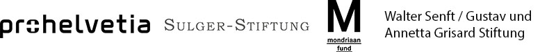

Emotions are the core of human experience. The international group exhibition Real Feelings explores the rapidly changing relationship between technology and emotions. The works of the 20 artists presented in the exhibition inquire and show how technology today represents, manipulates and changes our emotions.
In the 21st century, emotions have increasingly come into focus – how they can be manipulated and controlled by technology, because they influence our society and our lives. Today major technology companies try to manipulate the way we behave by triggering our emotions everyday through smart phones, laptops and personal devices. Machine learning systems can ‘read’ facial expres¬sions to determine human emotions. At the same time, young children are being trained to recognise emotions in other human beings – because their ability to do so is failing in the digital age. The barriers between human and machine, emotion and technology seem to be breaking down. Our heartbeat, perspiration, speech, or body language are checked by smart watches or fitness trackers, webcams and facial- and body-recognition systems. In the 21st century we are seeing the rise of investigations into emotional technology, which stands for measuring biometric data in order to detect and respond to our emotions, which is then used as data input for various digital applications. Advances in machine learning have enabled emotion recognition with AI. Our world is flooded with digital technology and these devices have literally become extensions of ourselves: humanlike robots are used in healthcare, sex robots are compensating the shortcomings of human relationships, smart devices are listening to our conversations and are taking care of our needs – we are communicating more with our technology than with other humans. As the emotional intelligence gap between humans and machines grows narrower – do we actually know how we really feel? Who is in control of our emotions now? Is technology beginning to influence how we feel? These difficult questions and more are raised in the course of the exhibition as visitors encounter diverse works which challenge, provoke, and explore how technology is representing, influencing and changing our emotions. A comprehensive catalogue will be published to accompany the exhibition, documenting the works in the exhibition and featuring current scientific and artistic contributions.
Artists
Antoine Catala (FR)
Stine Deja & Marie Munk (DK)
Heather Dewey-Hagborg (US)
Justine Emard (FR)
Cécile B. Evans (UK)
Ed Fornieles (UK)
Maria Guta & Adrian Ganea (CH/RO)
Esther Hunziker (CH)
Seokyung Kim (KR)
Clément Lambelet (CH)
Lorem (IT)
Kyle McDonald & Lauren McCarthy (US)
Simone C. Niquille (CH)
Dani Ploeger (NL)
Lucy McRae (AU)
Shinseungback Kimyonghun (KR)
Maija Tammi (FI)
Troika (UK)
Coralie Vogelaar (NL)
Liam Young (AU)
Curators
Sabine Himmelsbach
Ariane Koek
Angelique Spaninks
Real Feelings
: Emotion and Technology
27.08.2020 - 15.11.2020
Admission: 9 CHF / 6 CHF
The exhibition and the supporting programme are supported by:
The exhibition is created in partnership with: